Guía Rápida
Guía RápidaCAM Assistant es la aplicación web colaborativa que te permitirá participar en la cocreación de los casos de estudios prácticos. A través de comentarios podrás contribuir en la construcción de simulaciones realistas de los casos de estudios definidos. Cuanto mayor sea tu aporte podremos entre todos garantizar que la simulación generada puede ser útil para estudiar aquellos casos en los que los pacientes pueden verse afectados por la enfermedad o limitación que se estudia.
Durante este ciclo de trabajo, se podrán generar varias iteraciones hasta que sea posible usar la simulación como un caso práctico de estudio. Definido el caso práctico se pasará a la fase de diseñar y construir soluciones que mejoren las condiciones de los pacientes.
Mediante CAM Assistant se visualizarán las simulaciones en formato de vídeo, bien desde una o varias perspectivas (cámaras). Sobre cada cámara de la simulación podrás ir añadiendo comentarios que iran apareciendo sobre el vídeo en forma de subtítulos. Lo que se pretende es recoger tu feedback de la simulación construida bien para mejorarla o para incluir características que no se hayan tenido en cuenta en su construcción.
Usa la aplicación web de comentarios
La aplicación tiene la siguiente apariencia:
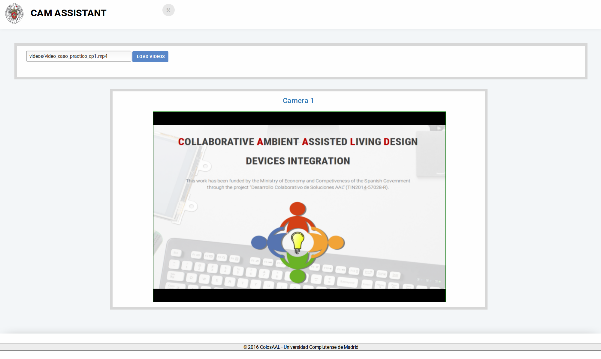
Si la simulación cuenta con varios videos se mostrará de esta forma (una cámara por cada vídeo):

Paso 1:
Carga los vídeos y las diferentes opciones de trabajo con el botón "LOAD VIDEOS".
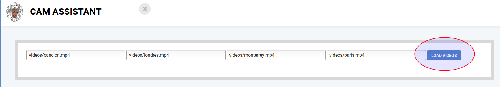
Una vez activado podrás ver todas las opciones de reproducción.
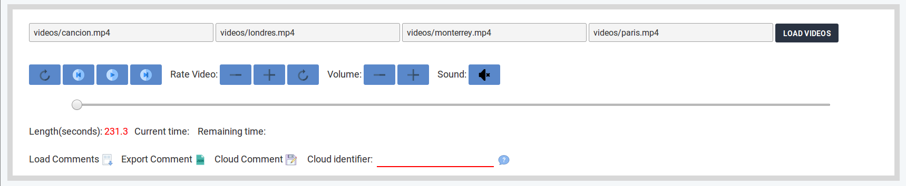
Paso 2:
Reproduce el/los vídeo(s).
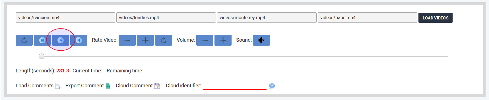
Paso 3:
Visualiza las opciones para añadir comentarios.
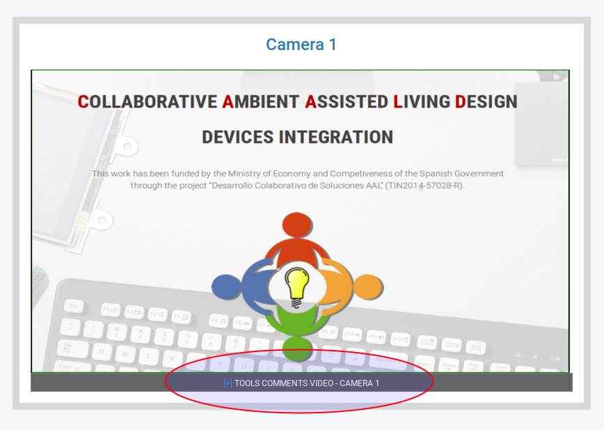
Paso 4:
Agrega los comentarios en los instantes de tiempos que consideres oportunos.
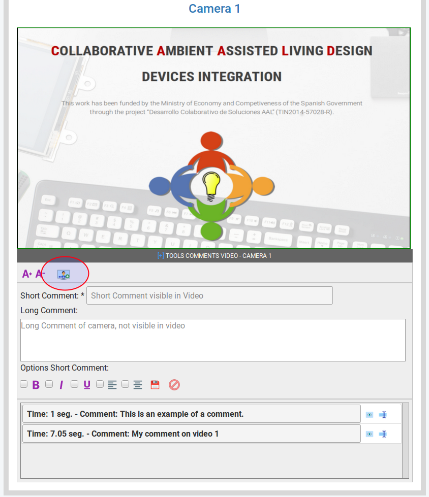
Debes agregar una breve descripción para tu comentario.
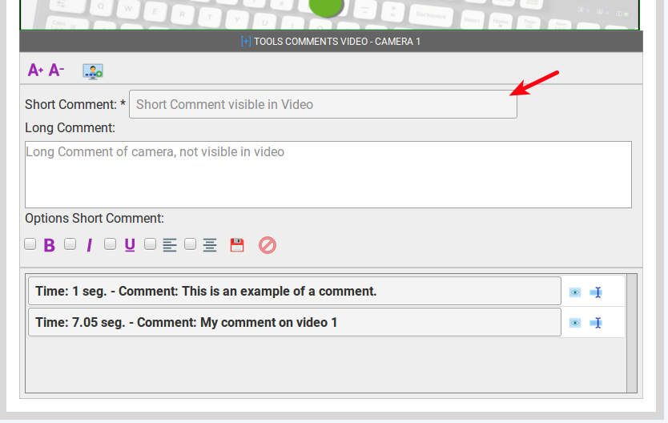
Y una descripción más larga que explique de forma amplia tu observación.
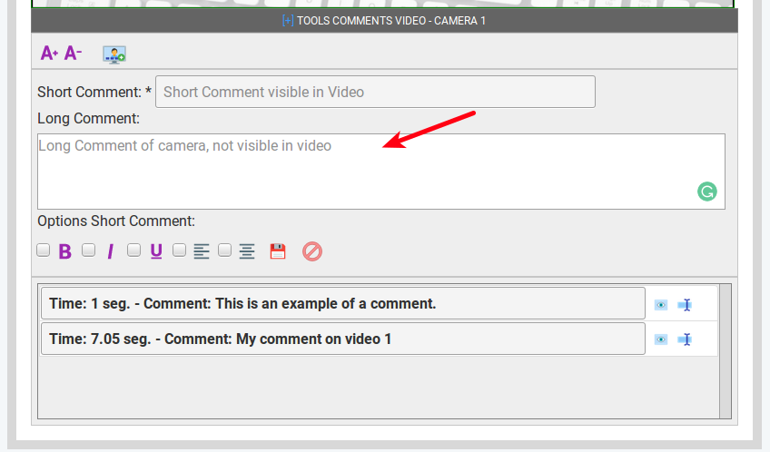
Finalmente guarda tu comentario para que quede registrado sobre el vídeo.
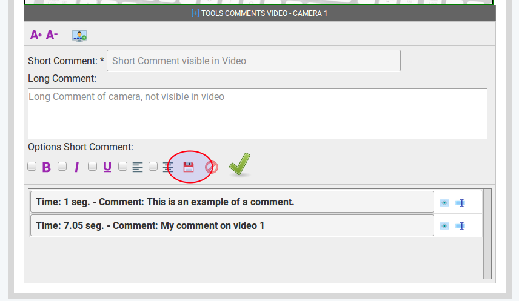
Aparecerá el nuevo comentario en la lista inferior. Podrás Visualizar y/o Editar tu comentario usando las opciones que se muestran a su derecha.
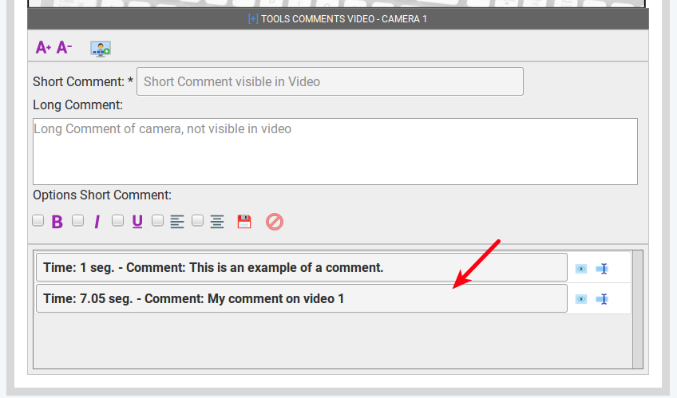
Paso 5:
Cuando hayas terminado de añadir TODOS los comentarios, sube tu trabajo a la nube utilizando el botón "Cloud Comment".
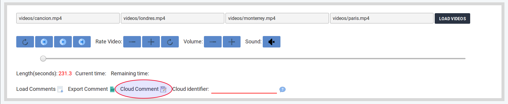
Paso 6:
Se visualizará un identificador único y exclusivo para ti, el cual tendrás que facilitar al equipo de desarrollo.
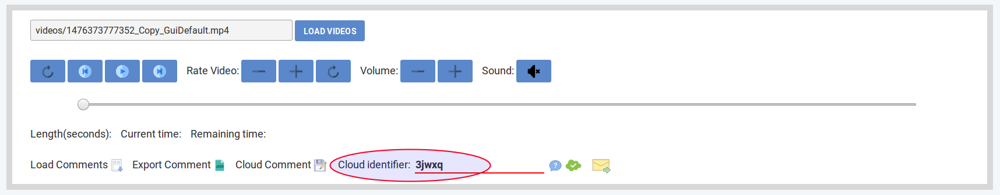
Para enviar dicho identificador al equipo de desarrollo, debes rellenar el formulario que se visualiza con la opción  . Indicar los datos que se piden y no olvides poner el identificador de tu colaboración.
. Indicar los datos que se piden y no olvides poner el identificador de tu colaboración.
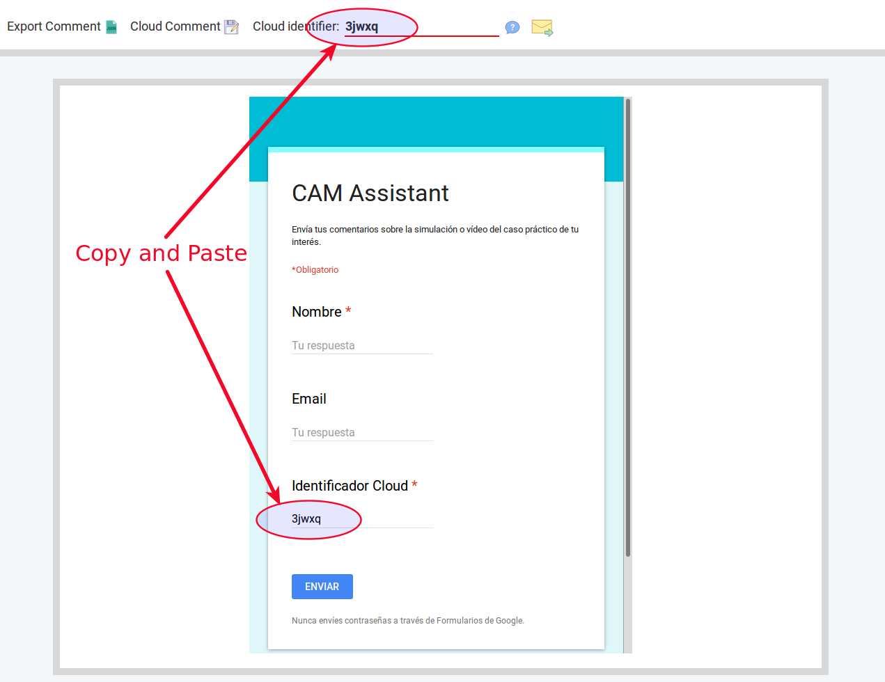
Los comentarios que subes a la nube son totalmente anónimos y no podrán ser analizados sino rellenas y envías el formulario correctamente.